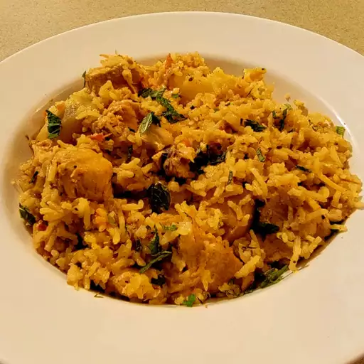

Biryani Recipe

Description
Chicken biryani is a delicious Pakistani/Indian rice dish that's typically reserved for special occasions such as weddings,
parties, or holidays such as Ramadan. It has a lengthy preparation, but the work is definitely worth it. For biryani,
basmati rice is the ideal variety to use.
Ingredients
- 4 tablespoons vegetable oil, divided
- 1 pound basmati rice
- 2 large onions, finely chopped
- 1 tablespoon minced fresh ginger root
- 3 pounds boneless, skinless chicken pieces cut into chunks
- 2 tablespoons plain yogurt
Steps
- Gather all ingredients.
- Heat 2 tablespoons of oil in a large skillet. Fry potatoes in hot oil until lightly browned, about 3 to 5 minutes. Remove to a paper towel-lined plate to drain; set aside.
- Add remaining 2 tablespoons of oil to the skillet. Add onions, garlic, and fresh ginger; cook and stir until onion is soft and golden. Add tomatoes, salt, cumin, chili powder, pepper, and turmeric; cook, stirring constantly, for 5 minutes.
- Stir in yogurt, mint, ground cardamom, and cinnamon stick. Cover and cook over low heat, stirring occasionally, until tomatoes are cooked to a pulp. It may be necessary to add a little hot water if mixture becomes too dry and starts to stick to the pan.
- Add chicken and stir well to coat. Cover and cook over very low heat until chicken is tender, 35 to 45 minutes. There should only be a little very thick gravy left when chicken is finished cooking. If necessary cook uncovered for a few minutes to reduce the gravy.
- Spoon biryani onto a warm serving dish.